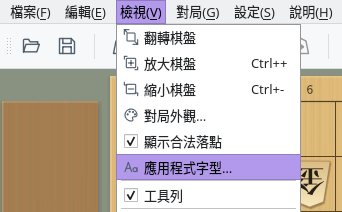
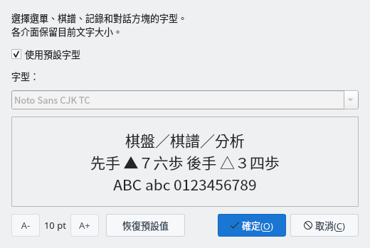
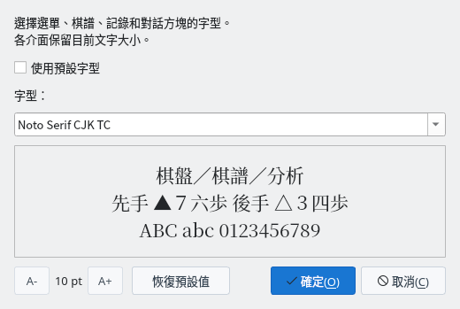
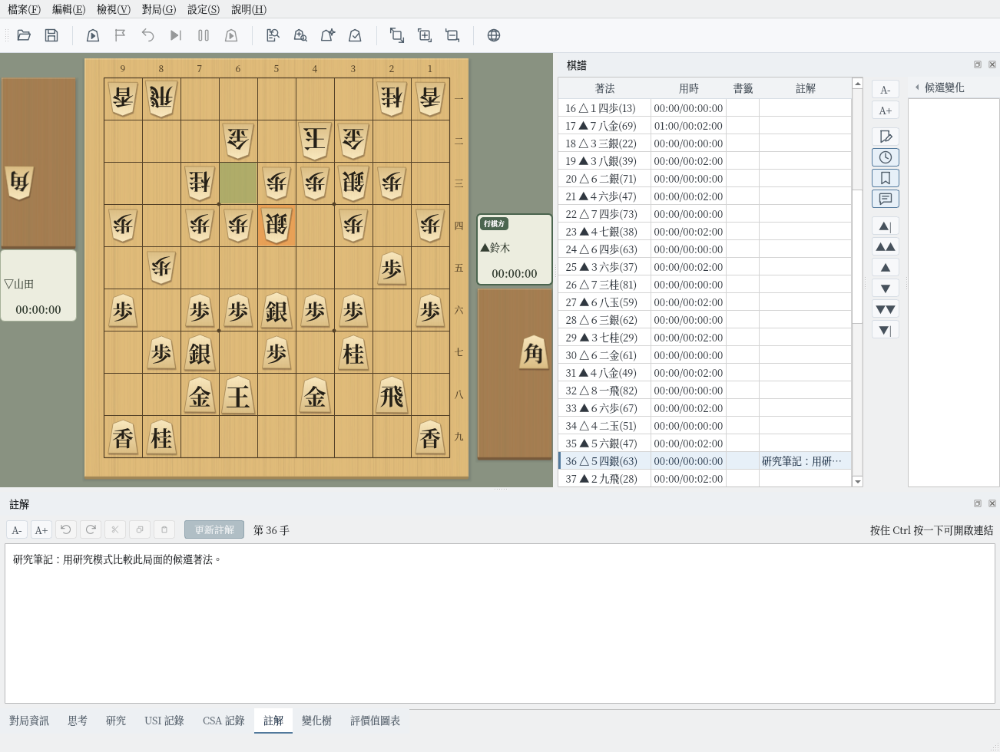

應用程式字型
一次將選單、棋譜、記錄和各對話方塊的字型換成喜歡的字型
截圖於 Linux 上以繁體中文介面擷取。字型清單中顯示的是您電腦上已安裝的字型。
選擇字型
透過「檢視」選單中的「應用程式字型…」設定整個程式的字型
開啟選單列中的「檢視」，選擇「應用程式字型…」，即可開啟「應用程式字型」對話方塊。選單面板的「檢視」分頁中也有相同的按鈕。
初始狀態下已勾選「使用預設字型」，使用與介面語言相應的預設字型（見下表）。


「檢視」選單中的「應用程式字型…」


應用程式字型對話方塊（初始狀態）
取消勾選「使用預設字型」後，即可從「字型」清單中選擇。清單中顯示的是您電腦上已安裝的字型。
下方的預覽會以所選字型顯示「棋盤／棋譜／分析」「先手 ▲７六歩 後手 △３四歩」「ABC abc 0123456789」三行，可以確認漢字、符號、英文字母和數字的效果。此時程式的顯示還不會改變。


字型選擇「Noto Serif CJK TC」
按下「確定」後，整個程式的字型會立即改變，不需重新啟動。選單、棋譜、各面板、對話方塊，以及棋盤周圍的對局者名稱、剩餘時間和座標都會使用所選字型。
所選字型會自動儲存，下次啟動時繼續使用。按「取消」則不做任何變更並關閉對話方塊。


按「確定」後的主視窗（Noto Serif CJK TC）
預設字型與文字大小
隨時可以恢復預設字型，文字大小維持各介面的設定
勾選「使用預設字型」時，會依介面語言和作業系統使用以下字型。
| 介面語言 | Windows | macOS | Linux |
|---|---|---|---|
| 日文 | Yu Gothic UI 等 | Hiragino Sans | Noto Sans CJK JP 等 |
| 中文（簡體） | Microsoft YaHei UI | PingFang SC | Noto Sans CJK SC |
| 中文（繁體） | Microsoft JhengHei UI | PingFang TC | Noto Sans CJK TC |
| 英文 | 各作業系統的預設字型。棋譜等日文以日文的預設字型顯示 | ||
電腦上沒有表中的字型時，會尋找適用於同一語言的其他字型（日文為 Meiryo UI、IPAexGothic 等），都沒有時使用作業系統的預設字型。
按下「恢復預設值」後，會勾選「使用預設字型」，清單也會恢復為預設字型。按「確定」後，整個程式會恢復為預設字型。
此對話方塊只變更字型。文字大小維持在棋譜面板、各對話方塊的「A-」「A+」等處為各介面設定的大小。
對話方塊左下角的「A-」「A+」及其間的數值（pt）用於調整此對話方塊本身的文字大小。文字大小和對話方塊大小會在下次開啟時沿用。